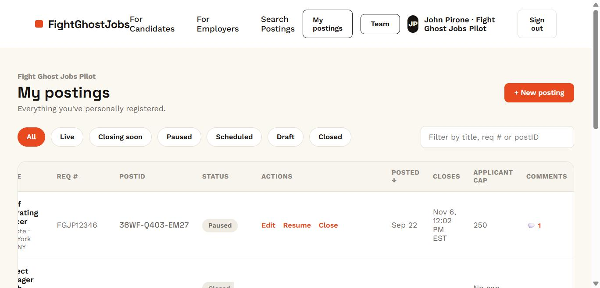
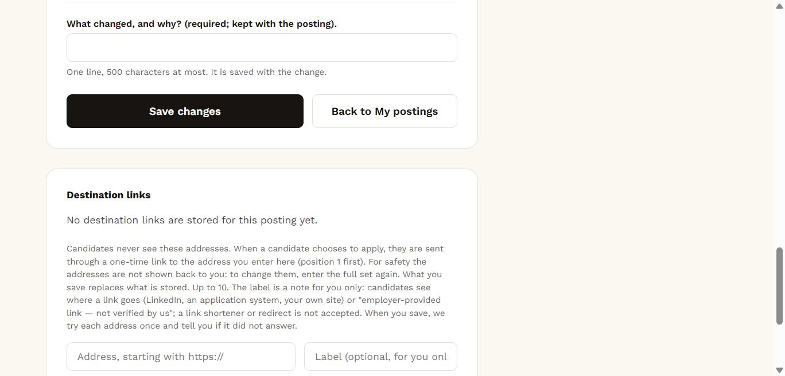

Show candidates the facts about your posting, so the right applicants can find you.
Candidate skepticism about ghost jobs is now a tax on every posting, including yours — and it's not the only cost. 24% of employers had at least one fake or fraudulent applicant in the past year1. 56% of employers cited too many unqualified applicants as a top online recruiting challenge, the most-cited for the fourth year in a row2. A registered listing, with an apply link that only a candidate who has completed the one-time verification can reach, is built to address both problems.
Email us about the pilot →Candidates don't trust the process, and honestly, the math backs them up.
Only 8% of candidates believe AI makes hiring more fair3, and 46% of U.S. job seekers say their trust in hiring has dropped in the past year3. Meanwhile recruiters are drowning too — 34% now spend up to half their week just filtering spam3. Neither side is winning the mass-apply-versus-mass-filter arms race. FightGhostJobs isn't a faster filter — it's a way to opt out of the race by showing candidates the facts about your postings before they apply, which can rebuild trust instead of automating around it.
This is the employer dashboard. Registering takes minutes, and it's still there tomorrow.
Title, req number, location, dates — that's it to start. Keep posting to your careers page, your ATS, LinkedIn, Indeed, exactly as you do now. FightGhostJobs sits alongside all of it, tracking status (live, paused, closing soon, closed) and candidate comments in one place, not instead of your existing tools.

Two separate AI toggles. Not one.
"AI used for initial filtering" and "AI used for interviewing or other" are set independently, because they're different things to a candidate. Add recruiter disclosure and an optional applicant cap, and every field is editable from your dashboard whenever the listing changes — no ticket, no waiting on us.
The trust fields are free on every tier. The destination links tier adds the links.
Company, title, location, dates, AI & recruiter disclosures, applicant cap, candidate comments, and search are free on every tier. The destination links tier adds: up to 10 destination links per posting, the option to name the recruiting firm, and the option to state that applications are accepted only through the destination links. Each link is tokenized, time-limited and single-use, watermarked to the verified candidate who receives it, so it is built to make it hard to scrape, share, or fake. The Plans page lists what each tier includes.

Copycat sites borrow real company names. Your FightGhostJobs listing gives you one link to point candidates and recruiters to as the employer's own record of the posting.
Put your postID in the job ad, in your careers page, in outreach templates. Candidates and even your own recruiters get one place to see the employer's own record of a posting before anyone clicks "apply."
Email us about the pilot →